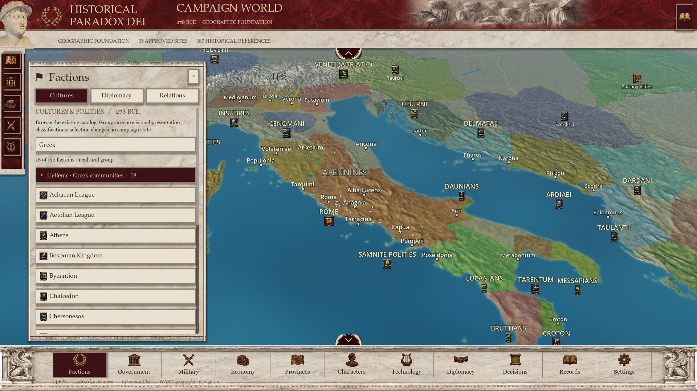

Cultures & polities · 278 BCE
Actual game captures of the functional faction browser. All 131 existing factions are organized into 26 presentation categories, with six broad inherited cultural mappings held for review. Choosing a record changes no ownership or campaign state.

Expanded Greek group
Audit, category counts, research reuse, changed files and validation · 423 native checks
Polity names, banner images and cultural codes are reused from the existing catalog. Historical uncertainty is retained; these categories are not a rigid ethnic taxonomy. Diplomacy and Relations remain future-system placeholders. No settlement assets were created.